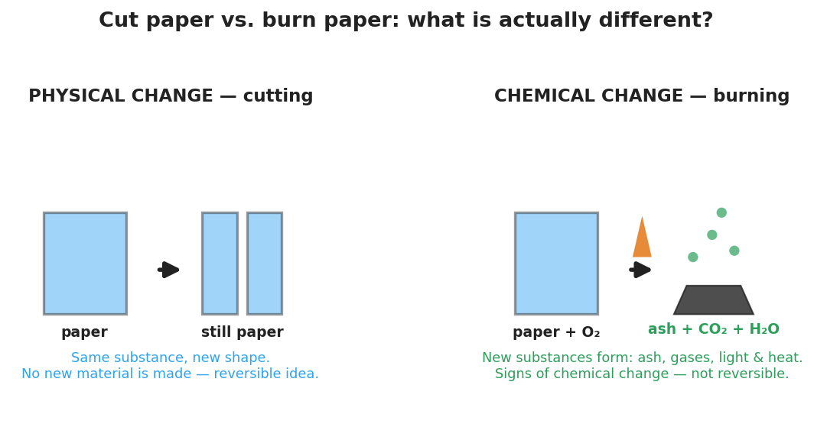

01 Phenomenon
Your teacher shows two acts with ordinary paper. In Act 1, a sheet is cut in half, then in half again — four pieces, but every piece is still paper. It still folds, tears, and feels the same. In Act 2, a different sheet is held to a flame. It blackens, gives off smoke and light, and leaves a crumbly gray ash. You cannot un-burn it, and the ash is not paper anymore.
02 Driving question
Cutting and burning both change the paper — so how do we know when a change has made a brand-new substance?
03 Notice & wonder
| I notice… | I wonder… |
|---|---|
Turn & Talk #1: Both the scissors and the flame put energy into the paper. The scissors didn’t make anything new; the flame did. In one sentence, what do you think the flame’s energy did to the paper that the scissors’ energy did not?
04 Initial model
Before your teacher names anything, write your best guess. Look at the two-panel figure below.

In the cutting panel, is the material at the end still paper? _______________
In the burning panel, is the material at the end still paper? _______________
What is your best guess for the rule that tells these two kinds of change apart?
05 Investigate
Part 1 — Station sort (BTC: argue from evidence)
Your group will visit each station, watch one change, and decide on your vertical surface: did this change make a new substance or not? Write the specific evidence that convinced you. Then copy your group’s decisions here.
| # | Station (what changes) | New substance? (yes / no) | Evidence (what you observed) |
|---|---|---|---|
| 1 | Cut / crumple paper | ||
| 2 | Ice melting | ||
| 3 | Salt dissolving in water | ||
| 4 | Antacid tablet in water | ||
| 5 | Steel wool + vinegar | ||
| 6 | Baking soda + vinegar |
Part 2 — Teacher demo: burning magnesium ribbon
Watch the demo (goggles on — do not look directly at the flame).
What did the magnesium look like before (color, flexible or brittle)? _______________________________________________
What did it look like after (color, flexible or brittle)? _______________________________________________
Is the white powder still magnesium? Circle one: yes / no What evidence tells you? _______________________________________________
Part 3 — Intensive vs. extensive (properties, not changes)
Compare a 1 cm piece of magnesium ribbon to a 10 cm piece of the same ribbon.
| Property | Same for both pieces? (yes / no) | Depends on amount? (yes / no) |
|---|---|---|
| Color | ||
| Mass | ||
| Density | ||
| Length |
Key question: Which kind of property — one that stays the same no matter the amount, or one that changes with amount — would help you identify an unknown substance? Why?
06 Make it make sense
For each change below, decide physical or chemical, name the evidence, and answer the follow-up.
A student bends a copper wire into a coil. The wire is still copper.
- Physical or chemical? _______________
- Evidence: _______________________________________________
- Could this change be reversed? _______________
A student lights a candle. The wick burns, the wax near the flame melts, and the flame gives off light and heat.
- The melting wax is a ___________ change because: _______________________________________________
- The burning wick is a ___________ change because: _______________________________________________
A student drops an antacid tablet into water and sees bubbles rise. A second student boils water and also sees bubbles rise.
- The antacid bubbles are a sign of a ___________ change because the gas is _______________________________________________
- The boiling bubbles are a ___________ change because the gas is _______________________________________________
A 5 g sample of sulfur is yellow and melts at 115 °C. A 50 g sample of the same sulfur is taken.
- Is the color of the 50 g sample still yellow? _______________ → intensive or extensive? _______________
- Is the mass of the 50 g sample the same as the 5 g sample? _______________ → intensive or extensive? _______________
07 Key vocabulary
- physical change
- a change in the form of a substance (size, shape, or state) in which no new substance is made; the particles are re-spaced or rearranged but the substance keeps its identity (cutting, melting, dissolving); often reversible
- chemical change
- a change that produces one or more new substances with new properties, because enough energy is added to break and remake bonds; recognized by signs such as color change, gas produced, light/heat released, a precipitate, or being hard to reverse (burning, rusting, the magnesium demo)
- intensive property
- a property that does not depend on the amount of substance present (density, color, boiling point, melting point); intensive properties identify a substance because they are the same for any sample size, in contrast to *extensive* properties (mass, volume, length) which depend on amount
Use each term in a sentence about today’s stations or demo. Do not copy the definition — describe something you actually observed or did.
physical change: _______________________________________________ _______________________________________________
chemical change: _______________________________________________ _______________________________________________
intensive property: _______________________________________________ _______________________________________________
08 Revise your model
Return to your Initial Model and your station table. Make these edits:
For each station, write the correct term next to your “yes/no”: physical change or chemical change.
For every chemical-change station, circle the one sign of chemical change that gave it away (color change · gas produced · light/heat · precipitate · hard to reverse).
Pick one substance from a station and list one intensive and one extensive property of it.
Substance: _______________ Intensive property: _______________ Extensive property: _______________
Then finish this Because / But / So sentence:
Burning paper makes a new substance because __________________________________________, but cutting paper only ____________________________, so __________________________________________.
09 Exit ticket
(a) You toast a slice of bread until it turns brown and gives off a burnt smell. Is this a physical or a chemical change? Name the sign(s) of chemical change you used to decide.
Change: _______________ Sign(s) of chemical change: _______________________________________________
(b) Classify each property as intensive or extensive:
- the density of a gold ring: _______________
- the mass of the same gold ring: _______________
(c) In one sentence, explain why a chemical change produces a new substance but a physical change does not. Use the words “bonds” and “energy.”
10 Explore further
- Physical-vs-chemical-change stations lab: Set up 5–6 quick stations, each with a single observable change. Suggested stations: (1) crumpling/cutting paper, (2) ice melting in a beaker, (3) dissolving salt or sugar in water, (4) a fizzing antacid tablet in water (gas produced), (5) steel wool + vinegar warming and rusting over the period, (6) a glow stick or baking-soda-and-vinegar reaction. At each station students record what they observe and tag it *physical* or *chemical*, citing the specific evidence. The teacher demo of burning magnesium ribbon (bright white light, white MgO ash, irreversible) is the showcase chemical change — run it once for the whole class with proper eye protection (the light is intense; do not look directly).
- Signs-of-chemical-change checklist: Using `figures/physical_vs_chemical_change.png` and the stations, students build a class anchor list of the five common signs of chemical change: color change, gas produced (bubbles/odor not from boiling), light/heat released or absorbed, precipitate formed, and difficulty reversing. No external URL required; a Javalab "states of matter / reactions" sandbox can preview the particle-level idea if a digital option is wanted.